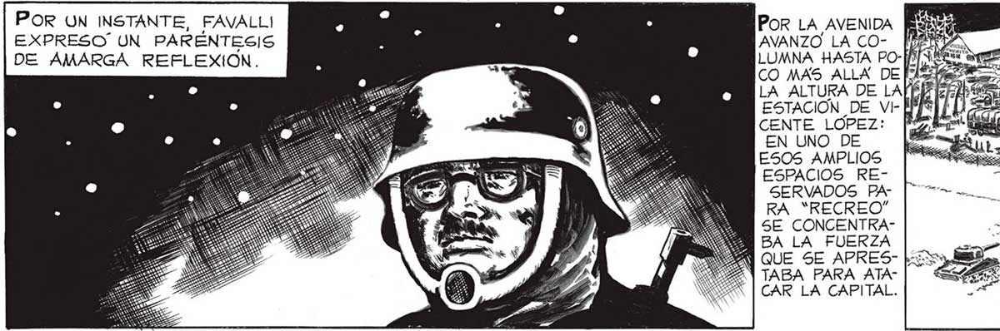
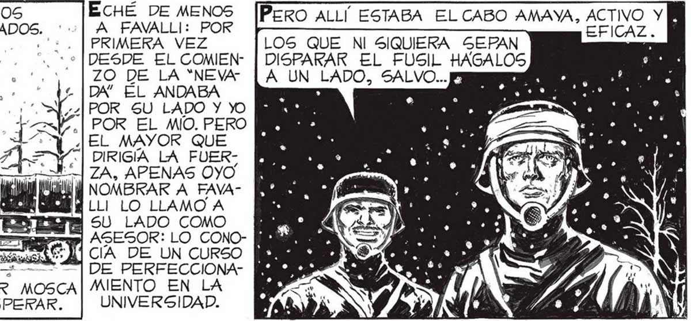

POR UN INSTANTE, FAVALL! POR LA AVENIDA da EXPRESO UN PARENTESIS ] AVANZO LA CO- has 2 DE AMARGA REFLEXION. LUMNA HASTA PO-[M ABE, 5 ' CO MAS ALLA DE fs LA ALTURA DE LA[ÉH e ESTACION DE VI- M1 SR o Ñ CENTE LOPEZ: [* a EN UNO DE > E ESOS AMPLIOS [| Cea MA ESPACIOS RE- rs rr SERVADOS PA- a A dE ] RA “RECREO” o E a" SE CONCENTRA- se 2 e BA LA FUERZA um. E =% j A Aa ALLÍ VOLVÍA SUMERGIRME EN ESA ESPECIE ES CAR LA CAPITAL “27 DE EMBOTAMIENTO QUE YA CONOCIERA CUANDO y 7 LOS MESES DE INSTRUCCION MILITAR: M] CEREBRO DEJO DE PENSAR EN MI, EN MARTITA Y... ... SARGENTO, EN TRATAR DE QUE MI GRUPO DE MILICIANOS EcHÉ DE MENOS EN ELENA QUE |%E PARECIERA LO MAS POSIBLE A UNA SECCIÓN DE SOLDADOS. ' A FAVALLI: POR HABÍAN QUEDADO A-|". ' of . o. 2. | PRIMERA VEZ DEJO INCLUSO DE MM. > FUSIL QUE ALCEN LA MANO! ] -- y A ZO DE LA “NEVA PENSAR EN TODO [fih :, . 47 e rn JN — :* /% ..,' DA” EL ANDABA POR SU LADO Y YO | POR EL MÍO. PERO EL MAYOR QUE DIRIGÍA LA FUEREL FABULOSO DESAGTRE QUE NOS RODEABA, AHORA ERA YO OTRA VEZ [lp» | PARTE DE UN EN- | | ,, ah ES] ZA, APENAS OyO GRANAJE : MIS PENN + EE TD ME ol a sd iia (6) NOMBRAR A FAVASAMIENTOS DEBÍAN SE SENO Y E MA Pi |LLI LO LLAMO A y CONCENTRARSE EN [Y Ml j o SU LADO COMO MEA LOS HOMBRES A MI Mi 6A EA CO A A a A Ya eT ASESOR: LO CONO- ME CARGO, EN ATENDER ¡eri > do MES (ANNA MC os EM] CIA DE UN CURSO LAS ORDENES DEL...| :.? A p A A 8 2 > DE PERFECCIONASOLO SEIS ALZARON LA MANO, EL HISTORIADOR MOSCA] MIENTO EN LA ENTRE ELLOS. REALMENTE ERA PARA DESESPERAR. UNIVERSIDAD. a e Bs YA LES ENCON-|] [BIEN. TAMBIÉN HA" TRAREMOS UBI- | | BRÍA QUE DAR DE CACION EN LA BAJA A OTROS MAESTRANZA : DOS: ANDAN GERNO HAY TIEMPO || CA DE LOS SESENAHORA DE ENSE- TA AÑOS.” NARLES NADA. |: 4 2 ESOS TENDRÁN QUE PE- Ino uagía nin- | [VAMOS A CARGAR ¡EH, JUAN! ¡VEN AQUÍ LEAR COMO TODOS... AL FIN]. TODOS JUNTOS Y..] [QUE EL MAYOR TE NEDE CUENTAS, NO CREO QUE PON ade Baras CESITA! TENGAN TIEMPO NI DE BRAS. PERO RECANSARSE, CONFORTABA yor LA SERENA ENERGÍA CON QUE AQUEL HOMBRE és AFRONTABA LA [ki ge PERSPECTIVA CA- [yl Sl SEGURA DE UNA MUERTE RA-[4 PIDA. YA DEPURA- [eN Y DO EL GRUPO, EMP-$ APECÉ A REFREST “A CAR LOS CONOCI-|E IS IA DEAN 2 AMENTOS DE LOS MAN ES SS QUE QUEDARON. fe> Ñ «E == A — Y, Y 85

